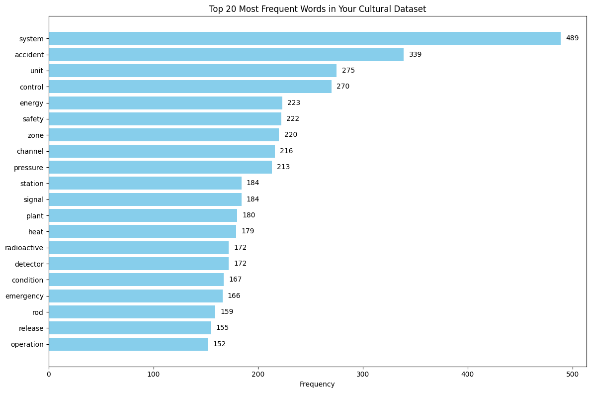
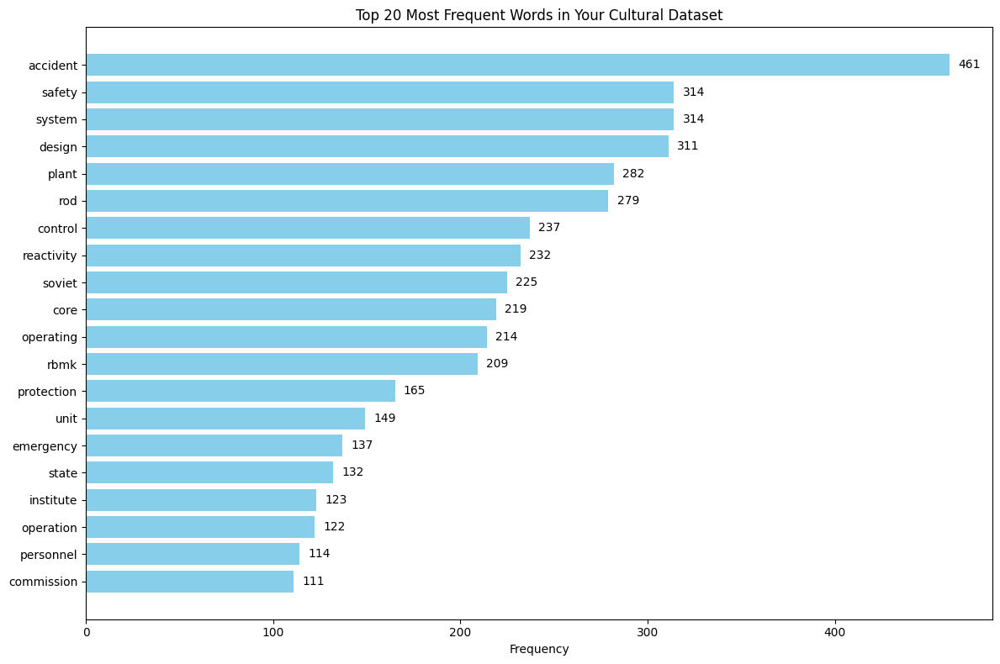

Research Question
How did Soviet and Western government communications about the Chernobyl nuclear accident differ from each other in their language, tone, and framing?
Background: In April 1986, the Chernobyl disaster became one of the worst nuclear accidents in history. For this project, we took the data analysis methods we learned throughout the semester and used them to examine how Soviet and Western governments differed in their descriptions of the Chernobyl nuclear explosion. In an earlier assignment, Evan examined topics and sentiments regarding Rotten Tomatoes reviews of the Chernobyl miniseries. He hypothesized that the reviews would contain references to the facade of lies and deceit that the Soviet regime employed to cover up the accident. Unable to confirm his hypothesis, whether it was invalid or out of scope of the data, he wanted to dive deeper. The obvious next course of action was to examine real data of correspondence regarding the event to see how that compares. This is where our final project begins.
The Evolution of Our Question: Initially, we thought that examining Soviet and Western news agencies would be the best course of action to see the difference in perception and language. However, we ran into one critical issue: the Soviet Union's lack of public information. This in itself, funny enough, provides somewhat of an answer to our hypothesis. There were almost no accessible news articles, TV broadcasts, or correspondence from anyone except official Soviet government agencies. The data was, and still is, on lockdown. The few articles we were able to find didn't include valuable information about the event and were in Russian.
Luckily, we were able to find a National Security Archive collection of documents regarding the event. The documents were written between multiple government entities and leaders, and upon initial glance, appeared to be exactly what we were looking for. We decided this would actually be a much better course of action. Official government documents would give us a behind-the-scenes look at how leadership on each side was framing the disaster, rather than what the public was hearing through news outlets.
Our Hypothesis: We predicted that Soviet government correspondence would carry a much more positive sentiment about the event. The documents would presumably make the event seem much more under control, better handled, and downplay the severity of it. We thought there would likely be topics focused on the heroism of party members while heavily blaming those responsible. On the other hand, Western sources would presumably hold a more negative view of the event, highlighting the severity, poor management, and worldwide impact.
Data & Methods
Dataset
Data Source: Most of our data came from the National Security Archive's Chernobyl collection, which provided declassified government documents from both Soviet and Western sources. We had 16 Soviet documents and 15 Western documents, ranging from short memos to lengthy analytical reports. In total, we analyzed tens of thousands of words of internal government communications from each side.
The Significance of What We Couldn't Find: The data collection process itself revealed something significant. We originally wanted to analyze Soviet news articles and public broadcasts, but that material basically doesn't exist in accessible form. The Soviet government locked down public information about Chernobyl so tightly that we could only find official government correspondence. This absence of data is, funny enough, part of our answer. The documents we did find were internal communications, Politburo session notes (formal meetings of Soviet leadership), diplomatic cables, and technical reports. Not materials intended for public consumption.
Collection Method: For each document, we manually downloaded them and converted them to text files to work with them more easily. All documents are declassified government records that are publicly available through the National Security Archive.
Ethical Considerations: Since these are 35+ year-old official communications that have been released to the public, there weren't privacy concerns. We tried to analyze both sides fairly and in their proper historical context.
Analysis Methods
Tools: Python with pandas, NLTK, VADER, Gensim, and spaCy libraries
- Term Frequency Analysis: We looked at which words appeared most often after removing stopwords. This helped us see what each government actually focused on in their internal discussions beyond just the basic facts of the accident.
- Sentiment Analysis (VADER): VADER gives scores from -1 (very negative) to +1 (very positive). We ran this on every document to see if Soviet internal communications really did frame things more positively, even when talking amongst themselves.
- Topic Modeling (Gensim LDA): We used Gensim's LDA algorithm to identify 3 main topics in each dataset. This revealed what themes each government emphasized in their internal discussions, whether it was technical details, political concerns, human impact, etc.
- Named Entity Recognition (spaCy) - Experimental Method: Here's where things got interesting. After running our base analyses, we wanted an additional method but weren't sure what would be most useful. We decided to try something experimental: we asked ChatGPT what additional analysis might reveal insights given our research question and dataset. It suggested named entity extraction to see what specific people, places, and organizations each side focused on. ChatGPT then wrote the entire entity analysis code using spaCy's named entity recognition. We ran it to see what would happen.
Limitations
The limitations of our approach became clear pretty quickly. VADER is trained on modern English social media text, not Cold War diplomatic language or translated Soviet documents. Some Soviet documents appeared to be translated from Russian, which definitely affected sentiment scoring. Our sample size was small, just 31 documents total, and we treated them as one corpus rather than tracking changes over time. The entity analysis, while generating lots of data, may not have provided the most meaningful insights since it was AI-generated rather than designed by us based on domain knowledge.
One major challenge: document types varied widely. We had everything from personal diary entries to technical reactor reports to diplomatic cables. This probably affected our results, but we didn't have enough documents to separate by type and still get meaningful patterns.
Results & Analysis
Term Frequency Results
The most common words after preprocessing revealed interesting patterns in how each government discussed Chernobyl internally.

Soviet documents emphasized technical and operational language

Western documents focused on design analysis and Soviet actions
Soviet documents frequently used words like "system," "unit," "control," "energy," and "station." Very technical and operational language. Western documents had words like "accident," "safety," "design," "soviet," and "reactivity" appearing more often. What stood out was that Soviet internal communications emphasized technical control and systems, while Western documents explicitly called it an "accident" and focused on "safety" concerns.
Sentiment Analysis Results
The sentiment analysis revealed some surprising results that challenged our initial hypothesis.

Average sentiment scores: Soviet documents were actually more negative
Key Finding: Contrary to our hypothesis, Soviet internal communications had a more negative average sentiment (-0.12) compared to Western documents (-0.08). This was unexpected. We thought Soviet documents would be more positive, downplaying the severity. Instead, their internal communications showed genuine concern and negativity about the situation.
This suggests that while the Soviet government may have presented a controlled public face, their internal discussions were quite serious and negative about the disaster. The Western documents, while still negative, were slightly less so on average.
Topic Modeling Results
LDA topic modeling revealed distinct themes in how each government approached the disaster internally.
Soviet Topics
Topic 1: Technical Operations
reactor, unit, station, system, control
Topic 2: Energy & Power Management
energy, power, nuclear, plant, operation
Topic 3: Personnel & Responsibility
people, work, personnel, management, responsibility
Western Topics
Topic 1: Accident Analysis
accident, reactor, design, safety, analysis
Topic 2: Soviet Response Assessment
soviet, information, government, response, public
Topic 3: Technical Investigation
reactivity, control, system, nuclear, technical
The topic modeling revealed that Soviet documents focused heavily on operational and technical aspects, with significant attention to personnel issues. Western documents explicitly framed it as an "accident" requiring "safety" analysis and spent considerable effort analyzing Soviet government responses and information sharing.
Named Entity Analysis
Our experimental AI-suggested analysis identified the most frequently mentioned people, places, and organizations in each dataset.
Note: This analysis was generated by ChatGPT's suggested code, so we're treating it as experimental rather than definitive.
Soviet Documents Most Mentioned:
- People: Gorbachev, Ryzhkov, Ligachev (top Soviet leadership)
- Places: Chernobyl, Kiev, Moscow, Ukraine
- Organizations: Politburo, Central Committee, Ministry
Western Documents Most Mentioned:
- People: Reagan, various technical experts
- Places: Soviet Union, Chernobyl, United States
- Organizations: CIA, State Department, various agencies
This suggests Soviet documents focused on high-level political leadership involvement, while Western documents emphasized intelligence and diplomatic agency analysis.
Key Findings
Our Hypothesis vs. Reality
What We Expected: Soviet documents would be more positive, downplaying severity and emphasizing control. Western documents would be more negative, highlighting poor management and worldwide impact.
What We Found: The opposite. Soviet internal communications were actually more negative on average than Western documents. This suggests that while the Soviet government maintained public control of information, their internal discussions showed genuine concern and negativity about the disaster.
Language and Framing Differences
Soviet Approach
- Technical and operational language
- Focus on systems, units, control
- Emphasis on personnel responsibility
- High-level political involvement (Gorbachev, Politburo)
- More negative internal sentiment
Western Approach
- Explicit "accident" and "safety" framing
- Focus on design analysis and investigation
- Emphasis on Soviet response assessment
- Intelligence and diplomatic agency involvement
- Slightly less negative sentiment
The Significance of Missing Data
Perhaps our most important finding came from what we couldn't find: accessible Soviet public communications about Chernobyl. The tight control of information itself tells a story about how the Soviet government handled the crisis. We could only access internal government documents, not public-facing materials, which suggests the information lockdown was real and extensive.
Methodological Insights
Our experimental use of AI-generated analysis code (the named entity recognition) produced interesting results, but we're not sure how meaningful they are since we didn't design the analysis ourselves based on domain knowledge. This raises questions about when AI-suggested methods are helpful versus when human expertise in designing analysis is crucial.
The limitations of VADER sentiment analysis on Cold War diplomatic language became clear - it's trained on modern social media text, not formal government communications from the 1980s. Some Soviet documents appeared to be translations, which likely affected sentiment scoring.
Reflection
What We Learned About Digital Humanities Methods
This project taught us that computational text analysis tools have real limitations when applied to historical documents. VADER sentiment analysis, designed for modern social media, struggled with formal diplomatic language from the 1980s. Our small sample size (31 documents) meant we couldn't separate by document type or track changes over time, which would have provided richer insights.
The most valuable lesson was that sometimes what you can't find is as important as what you can. The absence of accessible Soviet public communications about Chernobyl became part of our answer about how the two governments differed in their approach.
Unexpected Discoveries
Our biggest surprise was that Soviet internal communications were more negative than Western ones. This challenged our assumption that Soviet documents would downplay the severity even in internal discussions. It suggests that the Soviet information control was about public messaging, not internal denial of the situation's seriousness.
The topic modeling revealed that Soviet documents focused heavily on personnel and responsibility, while Western documents spent significant effort analyzing Soviet government responses. This shows that each side was concerned with different aspects of the crisis.
The Role of AI in Our Analysis
We experimented with asking ChatGPT to suggest additional analysis methods and write the code for named entity recognition. While this produced interesting results about which people, places, and organizations each side mentioned most, we're uncertain about the meaningfulness of AI-suggested analysis versus methods we designed ourselves based on our research question and domain knowledge.
This raises important questions for digital humanities: When is AI assistance helpful, and when does human expertise in designing analysis become crucial?
Historical Context and Modern Relevance
Analyzing these 35-year-old documents reminded us that government crisis communication strategies haven't changed dramatically. The tension between internal acknowledgment of problems and public messaging control that we saw in Soviet documents appears in many modern government responses to crises.
The Western focus on analyzing Soviet information sharing and government response also feels relevant to how governments today assess other nations' handling of disasters or crises.
If We Did This Again
With more time and resources, we would:
- Find more documents to enable analysis by document type and timeline
- Use sentiment analysis tools designed for formal/historical text rather than social media
- Include more context about each document's author, intended audience, and purpose
- Design our own additional analysis methods based on domain knowledge rather than relying on AI suggestions
- Attempt to find any accessible Soviet public communications for comparison
Despite these limitations, our analysis revealed meaningful differences in how Soviet and Western governments approached the Chernobyl disaster in their internal communications, and sometimes the most important findings are the ones that challenge your initial assumptions.